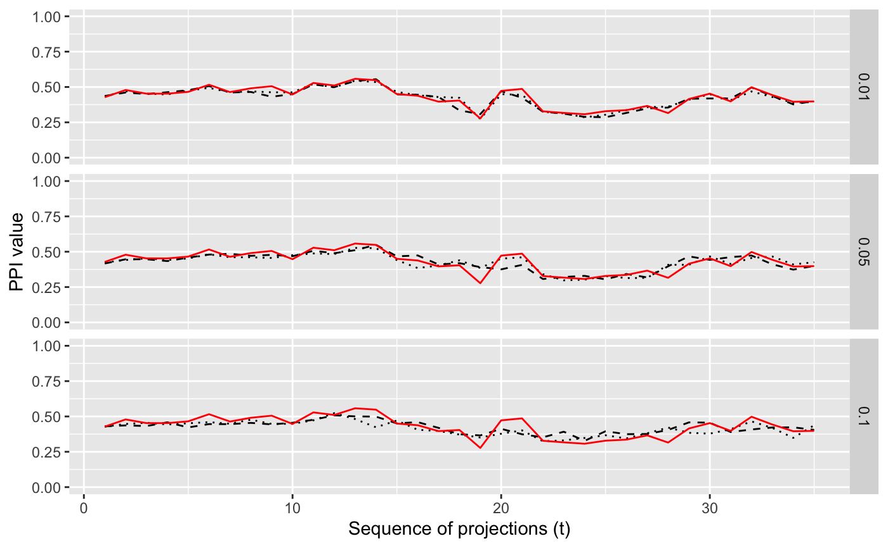

compareSmoothing.RdCompare traces with different smoothing options.
compareSmoothing(d, tPath, idx, alphaV = c(0.01, 0.05, 0.1), n = 10)Table of mean index values
d <- spiralData(3, 30)
tPath <- tourr::save_history(d, max_bases=2)
tPath <- as.list(tourr::interpolate(tPath, 0.3))
idx <- scagIndex("stringy")
compS <- compareSmoothing(d, tPath, idx, alphaV = c(0.01, 0.05), n=2)
plotSmoothingComparison(compS)
